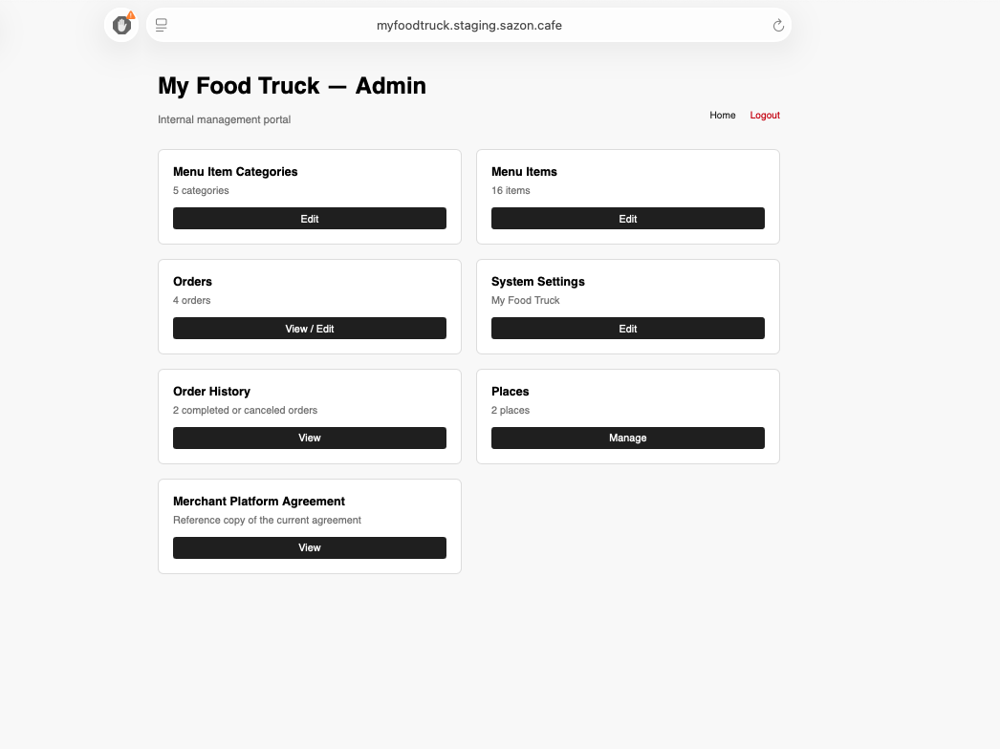
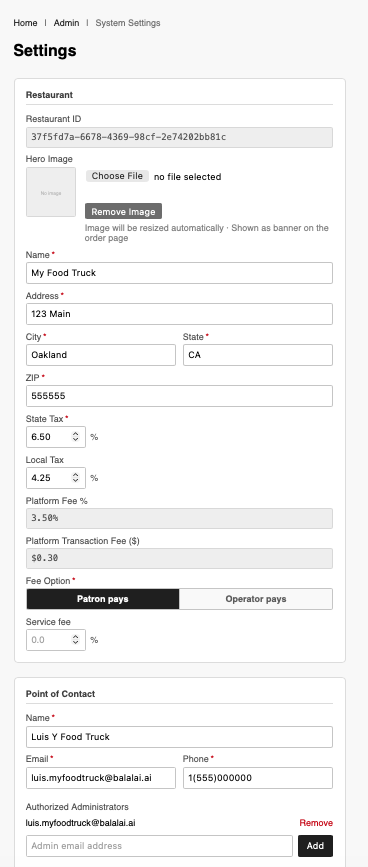
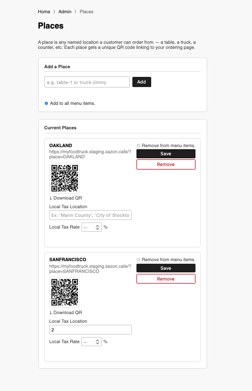
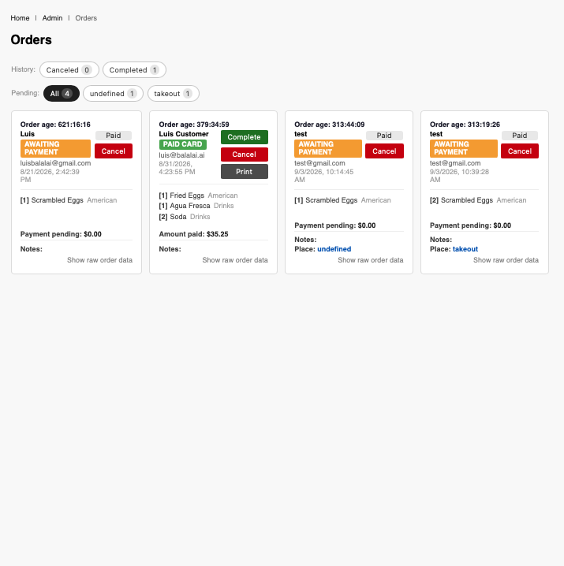
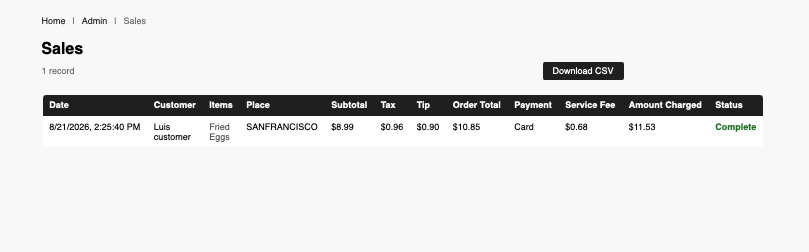

Recommended setup sequence
- Complete System Settings.
- Create Menu Item Categories.
- Add or import Menu Items.
- Create Places and download QR codes.
- Monitor Orders during service.
- Review Order History after service.
Food operator guide
Set up your restaurant, publish your menu, create QR ordering locations, and manage service with confidence.
Orientation
The Admin Home is your operations dashboard. Its six cards provide direct access to menu categories, menu items, live orders, system settings, order records, and ordering locations.
Portal example

Section 1
Enter your restaurant identity, branded banner image, address, taxes, fee selection, contact details, and authorized administrators.
Portal example

| Field | What to do | Why it matters |
|---|---|---|
| State Tax | Enter your applicable state sales-tax percentage. | It contributes to the order tax calculation. |
| Local Tax | Enter your applicable local tax percentage. | It adds the relevant local component to orders. |
| Fee Option | Choose Patron pays or Operator pays. | This determines who absorbs the platform fee. |
| Service fee | Enter a percentage only if you intend to charge a service fee. | It adds that percentage to applicable orders. |
Section 3
A Place is a named ordering location, such as your truck, a counter, a table, or an event. Each Place has its own customer-facing QR code.
Portal example

Section 4
Use categories to organize the customer menu. Manage categories here, or create and upload them through the Menu Items CSV workflow.
Section 5
Orders is your live service board. Monitor pending orders, payment state, location, customer notes, and fulfillment progress.
Portal example

| On-screen item | How to use it |
|---|---|
| History filters | Use Canceled or Completed to review past outcomes. |
| Pending filters | Use All or a Place filter to focus the active production queue. |
| Order age | Prioritize older orders during high-volume service. |
| Payment state | Confirm whether the order is Paid or Awaiting Payment before fulfillment. |
| Notes | Read customer notes before preparing food. |
Section 6
Order History stores completed and canceled transactions. Use it for end-of-day review, reconciliation, customer questions, and sales analysis.
Portal example

Records can include date and time, customer, items, Place, subtotal, tax, tip, order total, payment method, service fee, amount charged, and status. Select Download CSV to export the sales record for a service period and use it in your accounting workflow.
Practical checklist